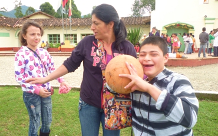
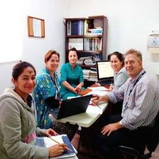

Misión
La Clínica del Oriente, Corporación para la Salud Mental, es una institución privada sin ánimo de lucro comprometida con la prestación de servicios especializados en salud mental y rehabilitación en drogodependencia, atiende a las personas, familias y redes de apoyo desde un modelo de atención integrador y solidario.
Realiza su tarea desde un sentido humano, personas idóneas y comprometidas a través de la aplicación de procesos clínicos y administrativos bien definidos para mejorar el proyecto de vida y adaptación al medio de la población objeto.
Compartir
Visión
Ser en el año 2015, una entidad modelo y referente en el tratamiento de la enfermedad mental y/o adictiva, reconocida en el país por su eficacia en la intervención y recuperación de las personas reincorporándolas a sus familias y/o redes de apoyo.
Compartir
Política de Calidad
En un proceso continuo de mejoramiento se compromete a prestar sus servicios de manera solidaria, segura, oportuna y con un modelo de tratamiento eficaz que permita al usuario su mejoramiento y reintegro a la vida social.
Para ello contamos con personal competente y una infraestructura adecuada.
Compartir
Objeto Principal
“Brindar atención integral a Niños, Niñas, Jóvenes, Adolescentes con discapacidad mental absoluta, mediante la prestación de servicios de atención especializada en salud mental y casos de drogodependencia, buscando siempre la protección integral en pos de la garantía del Restablecimiento de Derechos con énfasis en Desarrollo Integran e Inclusión Social”.
Compartir
Fines Específicos
Brindar atención en Salud Mental a las personas y/o entidades que soliciten los servicios.
Trabajar por rehabilitación de las personas que sufren de una Enfermedad Adictiva.

Fomentar la Investigación y Psicoeducación en el campo de la Salud Mental.

Acogida con calidez a nuestros usuarios y servidores de la Institución en fin de atender las necesidades de manera integral.